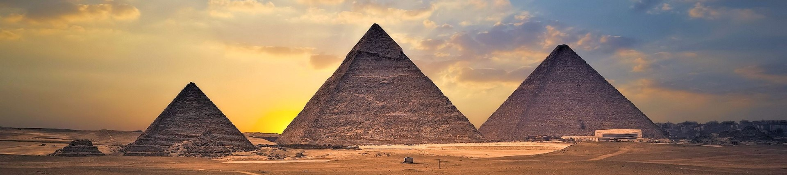

Piramidy w Egipcie, zwłaszcza Wielka Piramida w Gizie, to jedne z najbardziej znanych zabytków starożytnego świata. Zbudowane ponad 4,5 tysiąca lat temu, służyły jako grobowce dla faraonów i są świadectwem zaawansowanej wiedzy inżynieryjnej starożytnych Egipcjan. Wielka Piramida jest jedynym zachowanym oryginalnym Cudem Świata Starożytnego i do dziś budzi podziw swoim ogromem oraz precyzją wykonania. To jedno z najważniejszych miejsc dziedzictwa kulturowego na świecie.
